|
Plugin Artefactos |
|
El Plugin permite crear un diagrama en el que se puede agregar y definir artefactos y relaciones entre estos. Las funciones adicionales del plugin se integran con las herramientas básicas del Entorno Colosoft en el Marco de Expresión. También utiliza el Marco de presentación para mostrar la estructura jerárquica del diagrama, y es integrable con los Frameworks de pruebas y seguimiento. Creación de un nuevo Diagrama de Artefactos. 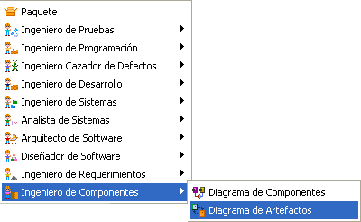 Figura 1. Creando un diagrama de artefactos Se ingresan los datos del Diagrama: Nombre, Autor y Descripción. 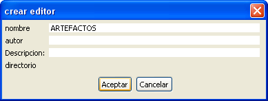 FIgura 2. Datos para creación del diagrama de artefacto En el diagrama creado se visualiza el marco de expresión y presentación como activos. 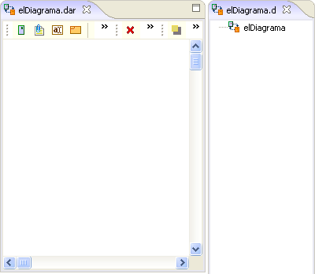 Figura 3. Marcos usados por el plugin de artefactos La Figura 4 muestra las herramientas básicas de Colosoft y algunas opciones adicionales del Plugin. 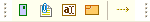 Figura 4. Barra básica de coloso utilizada por el plugin Agregar un Nuevo Artefacto 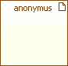 Figura 5. Representación de un artefacto Un nuevo artefacto es creado y se abre el Dialogo de edición. 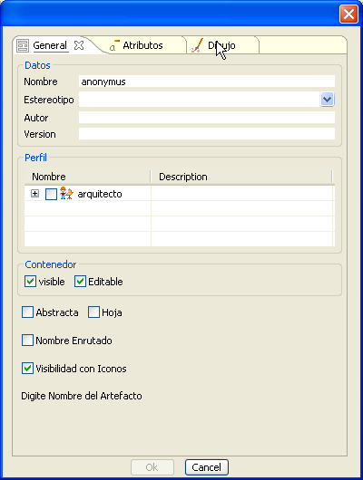 Figura 6. Ventana de creación de un artefacto Especificar el Artefacto La especificación del artefacto es similar a la de los demás componentes en Colosoft. Las pestañas atributos generales y dibujo están presentes y permiten las siguientes acciones. General: Permite cambiar la descripción general del artefacto, el nombre, versión autor, y estereotipo. 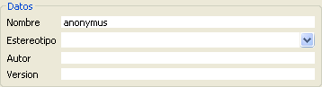 Figura 7. Datos básicos de creación de un artefacto Perfil: Permite tipificar el comportamiento del artefacto mediante una serie de patrones y antipatrones de diseño. 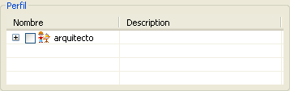 Figura 8. Tipificar el artefacto El perfil también permite definir si el contenedor del artefacto es visible o no, y el si es editable o no, como se muestra en la Figura 9. 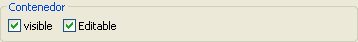 Figura 9. Opciones del contenedor Otras características permiten establecer el elemento como Abstracto o como Hoja, y la visibilidad de los iconos 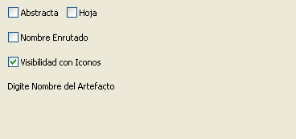 Figura 10. Propiedades gráficas del artefacto Añadir
Atributos 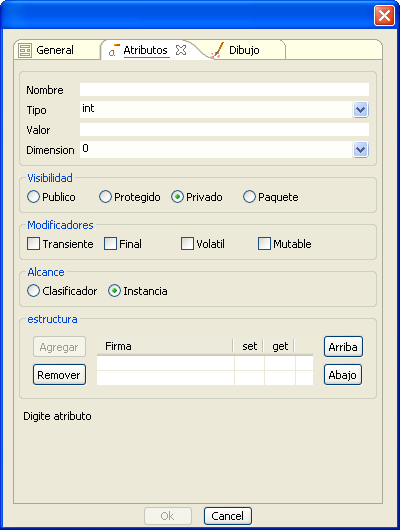 Figura 11. Atributos del artefacto En el primer apartado se introducen datos de nombre de la variable y tipo, que se puede escoger de entre Int, Char, boolean, etc. En la ventana se puede escoger un valor inicial para la variable y si se desea para mas de una dimensión, se puede especifica el tamaño de arreglo, tal como se muestra en la Figura 12. 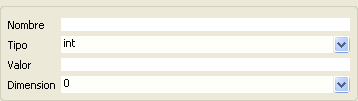 Figura 12. Atributos generales del artefacto En los siguientes grupos se puede establecer la visibilidad del nuevo atributo: Público, Protegido, Privado y de paquete. El tipo de Modificador: Transiente, Final, Volatil, Mutable. Y el Alcance: Clasificador e Instancia. 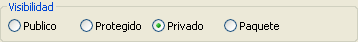 Figura 13 Atributos de visibilidad, modificadores y alcance En la parte de estructura se agregan las variables creadas a la estructura del artefacto, también se pueden eliminar y cambiar el orden de estas. Set y Get permiten crear los métodos de acceso correspondientes. 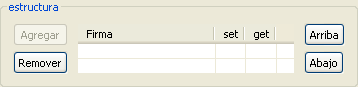 Figura 14. Estructura del artefacto Formato del Artefacto En la pestaña Dibujo se pueden editar todos los aspectos gráficos de la presentación del artefacto como color de la letra y del fondo, tipo de relleno, etc. También se edita la forma de redimensionamiento gráfico con Diagonal, Lateral, Libre o Null. 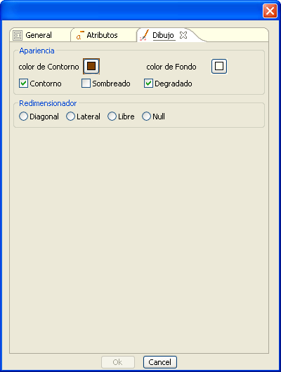 Figura 15. Formato gráfico del artefacto Crear Relaciones entre Artefactos. Las relaciones entre artefactos que se pueden crear son de tipo dependencia. Para crear una dependencia se posiciona el puntero sobre el artefacto, aparecen a los extremos izquierdo y derecho iconos, como se muestra en la Figura 16. Las dependencias hacia y desde el artefacto se crean halando de estos iconos, al hacerlo automáticamente aparece el cuadro de de dialogo para la creación de un nuevo artefacto. 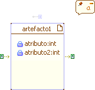 Figura 16. Iconos contextuales del artefacto También se puede halar de los iconos y apuntar hacia otro artefacto ya creado, con lo cual aparece un cuadro de dialogo donde se puede establecer el nombre de la relación y el nombre para los roles de cliente y proveedor. 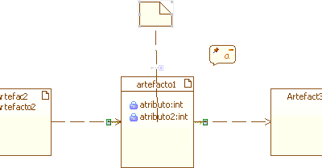 Figura 17. Elementos creados a partir de iconos contextuales También se puede halar de los iconos y apuntar hacia otro artefacto ya creado, con lo cual aparece un cuadro de dialogo donde se puede establecer el nombre de la relación y el nombre para los roles de cliente y proveedor. Para editar lar relaciones existentes, se hace clic derecho sobre la flecha de la relación y se selecciona Especificación 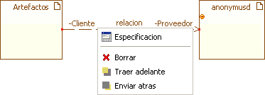 Figura 18. Editando relaciones entre artefactos |